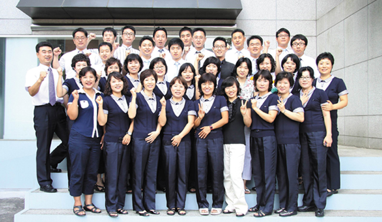

업계 최대의 서비스 네트워크와 서비스 인력을 보유하고 있는 신도리코는 이예 안주하지 않고 더욱 신속하고 정확한 서비스를 위해 노력하겠습니다.
-
- Service Centers
- : 전국 14개 지역에 위치한 서비스센터는 관할 지역의 서비스를 총괄 관리하는 지역 컨트롤 센터 역할을 수행합니다. 출장수리·내방수리·계약기기 관리 업무 및 관할 지역 파트너 교육·지원등 다양한 업무를 수행합니다.
-
- Repair Centers
- : 서울·아산·부산의 3개 물류 거점에 위치하고 있는 집중수리센터입니다. 2PL 물류 시스템과 택배를 통해 입고 기계 수리를 수행하며 관할 지역 서비스 파트 공급 센터 역할도 수행합니다.
-
- Customer Support Center
- : 전화·WSS·PASS·홈페이지 등 다양한 채널로 접수된 상담과 서비스 요청에 대응하고 있습니다. 접수된 고객의 소리를 관련 부문에 전파하여 개선 활동을 수행하며, 지속적인 데이터베이스 관리를 통해 고객 가치와 행복을 더 하는 고객지원센터로 거듭나고 있습니다.
-
- Service Master
- : 신도리코에서 기술력과 서비스 품질, 서비스 마인드 레벨을 인증한 서비스 전문점으로 전국 100여개 점이 운영되고 있습니다. 전국 어디에서나 본사 서비스센터와 동일한 고품질 서비스를 경험하실 수 있습니다. DG센터는 신도리코 기술 인증 자격증(SCET) 보유 기술사원 육성과 서비스 품질 평가를 통해 지속적으로 관리되고 있습니다.
모든 서비스 사원의 IT 전문가화를 이루기 위해 컴퓨터 및 네트워크 시스템 과정, 솔루션 전문가 과정등 오피스 시스템 전체를 총괄하는 IT 교육을 상시 개설하고 있습니다. 자체적인 기술자격검정 실시와 국제자격증 취득으로 2007년에는 업계 최초로 CompTIA ASC(IT 선진기업임을 보증하는 국제인증)를 획득하기도 하였습니다. 이렇게 지속적인 서비스 사원의 육성으로 앞선 서비스를 제공하기 위해 노력하겠습니다.
-
- 체계화된 기술교육
-
- IT 교육현장
-
- CE 솔루션 교육
-
- CE 기술능력시험
-
- 솔루션 전문가 과정
-

- 서비스콜센터
-
- CompTIA ASC 인증 획득
-
- CE기술컨테스트1
-
- CE기술컨테스트2
-
- CE기술컨테스트3
이전 컨텐츠 보기
다음콘텐츠보기
신도리코는 '오늘의 고객은 어제의 서비스에 만족하지 않으며, 내일의 고객은 오늘의 서비스에 만족하지 않는다’ 라는 마인드로 서비스 품질 향상에 매진하고 있습니다.
신도리코는 고객의 업무생산성과 직결되는 서비스 품질 향상을 위한 서비스 시스템 개발 및 발전에 힘쓰고 있습니다. One Call 서비스를 위한 콜센터 통합, 콜센터 CTI와 서비스 사원의 스마트 폰이 네트워킹되어 보다 신속하고 정확한 서비스가 가능해진 FSA, PC의 아이콘 클릭만으로 서비스를 신청할 수 있는 WSS 등 기기관리에 필요한 시간과 절차를 최소화하는 서비스 시스템을 구축하였습니다. 더불어 서비스 품질 데이터를 실측하여 개선을 위한 지표로 활용하고 있습니다. 이와 같은 서비스 체계 재정립으로 보다 신속한 서비스를 제공해 드릴 수 있게 되었습니다. 서비스 요청 접수 후 2시간 내 방문과 4시간 내 처리 완료를 목표로 하는 2×4 서비스로 최고의 서비스를 약속드립니다.
-
- 찾아가는 서비스
- : A/S 요청 없이도 고객사를 방문하여 기기를 점검하고 주변 환경을 개선해주는 서비스로, A/S를 넘어 B/S(Before Service)를 가능하게 하는 신도리코만의 서비스입니다. 기기 점검과 외관 및 주변 청소, 더 좋은 사무환경을 위 한 진단과 제언이 ‘찾아가는 서비스’에서 이루어집니다.
-
- WSS (Web Service System)
- : 고객이 PC 바탕화면에 있는 아이콘을 클릭함으로써 고장 및 소모품 신청 등을 할 수 있으며, 서비스 방문 정보를 휴대폰으로 확인할 수 있는 시스템입니다.
-
- 원격지원 서비스
- : 상담원이 실시간 원격제어로 신속하고 정확하게 고객의 문제를 진단하여 대응하는 서비스로, 안전하고 편리한 서비스를 제공해 드립니다.
-
- PASS(Pro-Active Service System)
- : 기기 고장을 자동으로 감지하여 서비스를 수행하고 소모품 및 부품에 대한 사전 대응으로 다운타임을 최소화하 는 시스템입니다.
-
- 365 서비스
- : PP 장비 사용처와 대형 유통점 등을 중심으로 야간과 주말에도 서비스를 제공하는 것으로, 고객사 장비의 24시간 가동체제를 가능하게 합니다
-
- On-demand Service
- : 고객사 전담 인원이 상주 근무하면서 정기점검을 수행하고 고객의 요구사항에 맞는 맞춤 솔루션을 제공하는 서비스로 제품 및 솔루션의 사용방법 안내와 교육도 함께 진행합니다.
-
- 
- 찾아가는 서비스
-
- 모바일 QR서비스
-
- 원콜 서비스


2011년 국가품질상(서비스 인증) 서비스 품질 우수상 수상 고객을 배려하는 기업 1위, A/S를 신속하게 해주는 기업 1위 (2008 매경리서치 조사 결과) 소비자 선정 대한민국 A/S 만족지수 1위(2008 이코노미스트·서강대경영연구소 주최) 고객의 신뢰와 사랑이 신도리코의 최고 가치입니다. 고객만족을 넘어 고객감동을 향해 앞으로도 서비스 역량 향상에 매진하겠습니다.
-
- CCMS 도입
-
- 밝은 CS 만들기
-
- 대한민국 AS 만족지수 1위
-
- CS Workshop